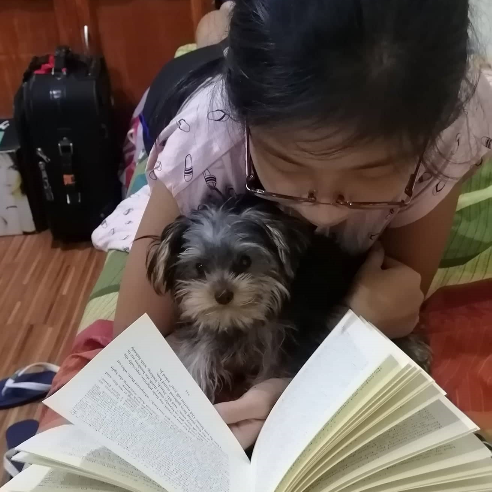
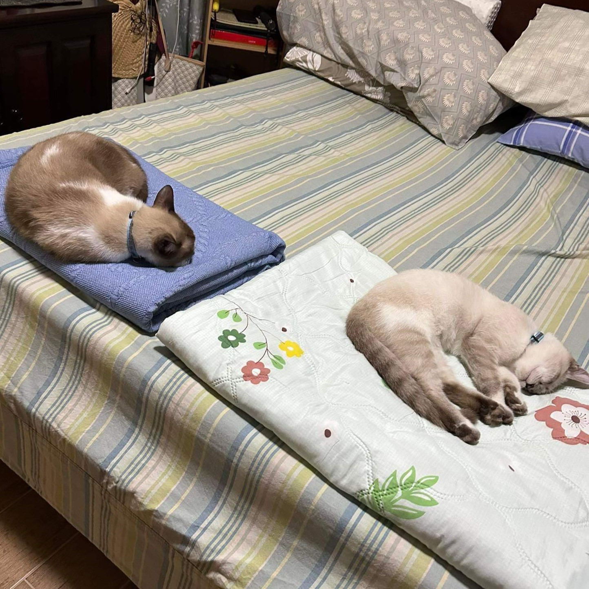
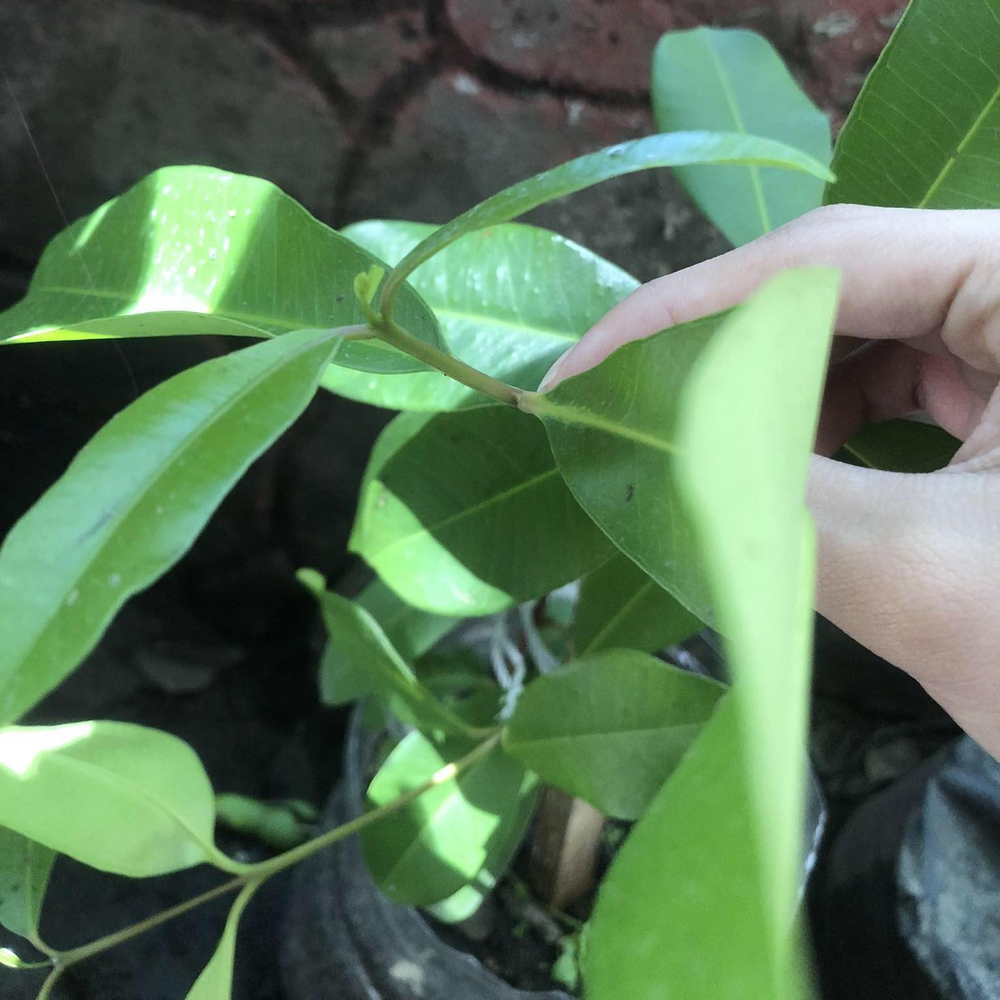
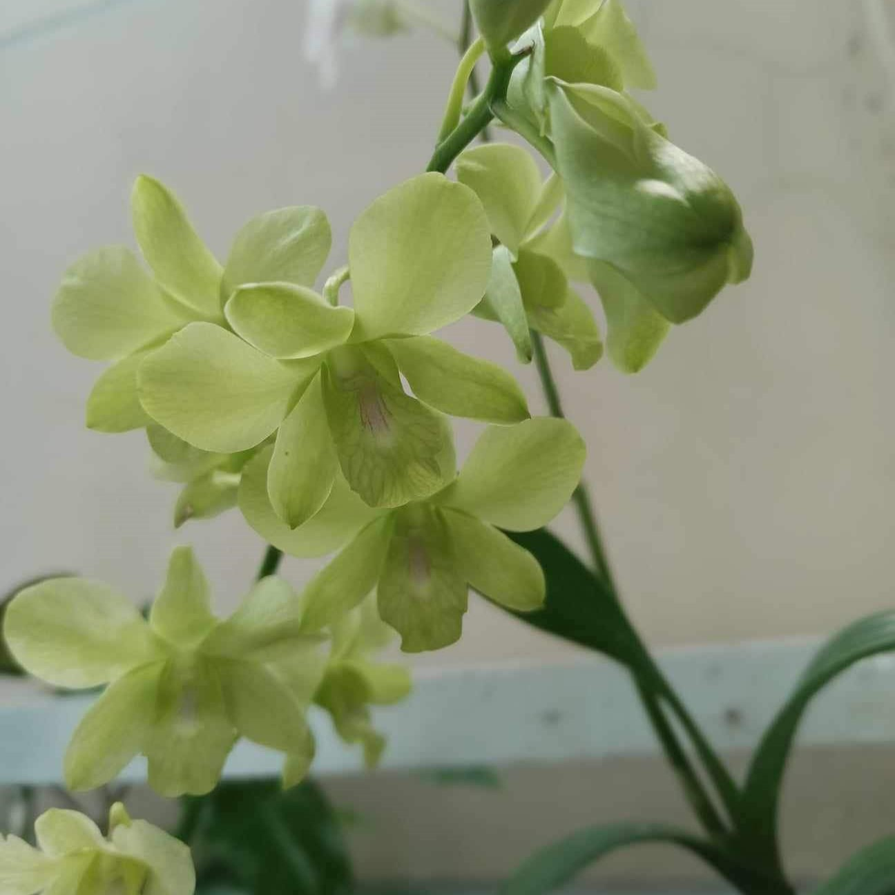
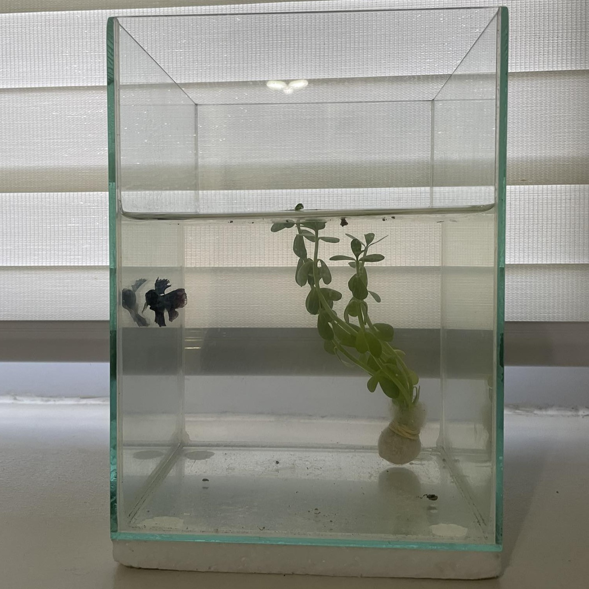
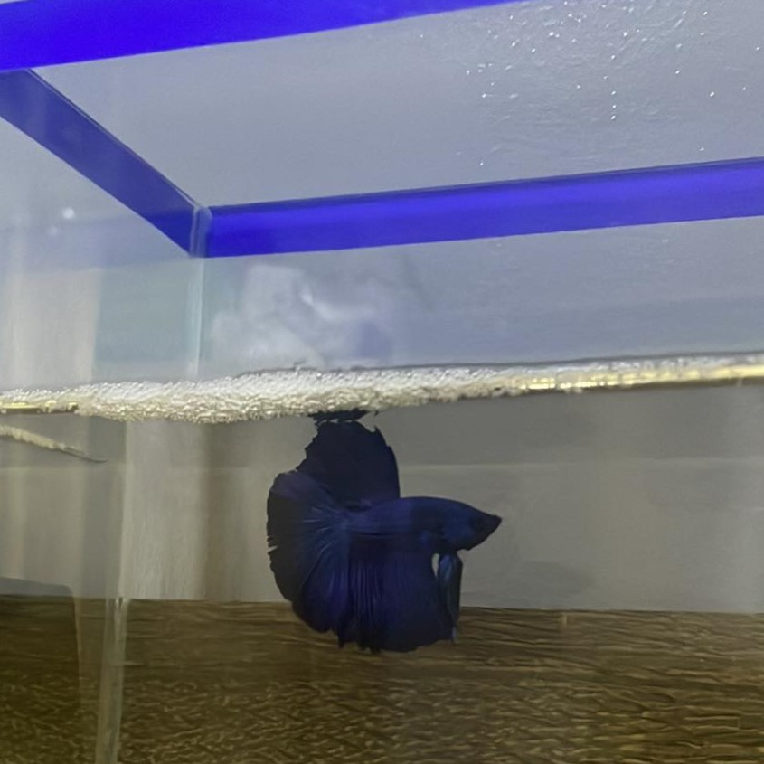

THE NURTURE PROJECT
Welcome to my Blog
Meet
PEPPER & FROST
THE NURTURED ONES
Enya Luansing, December 7, 2023
Loving pets! I think it will feel devastating to let go of Pepper and Frost, as it has been a journey taking care of them, and it is a journey I do not want to end. It brings me happiness to be able to see their improvements throughout the time I had them. Importantly, it is good to see them interact and play with each other, which helps in proper socializing with others, just like how we need to teach some clients how to properly communicate with other people, conveying a clear message without causing confusion or misunderstanding. I will carry this project with me and continue to nurture my pets and gain experiences or learnings from them that I can apply when I pursue my dream of being an occupational therapist.


THE ONES WHO CONTINUE TO GROW
Enya Luansing, December 4, 2023
Seeing in the eyes of an OT student! This is relevant to my course, as there are similarities between taking care of Pepper and Frost and envisioning myself taking care of clients. Like my pets, I would also want to get to know my clients better, especially their context or background, in order to identify the best approach to them and how I can help them reach a goal. For example, in this journey, I tried to observe my pets' attitude and their likes and dislikes, and these helped me pick the suitable activities for them. Hence, evaluating a client should also give importance to their deficit or impairment and the suitable interventions to conduct for them. There must be an identified end goal so that the activities have purpose. As much as I would love to give attention to Pepper and Frost, I also want them to develop independence in doing their activities so they won't get too lonely at times when I cannot spend time with them.
THE LOVE AND CARE TO GIVE
Enya Luansing, December 1, 2023
Giving care! I learned during this period, while taking care of Pepper and Frost, to also pet them often, as it provides numerous benefits. Firstly, it reduces stress for both my pets and me, and they also feel loved and cared for. Moreover, it helps in our relationship, as they tend to trust or connect more with me. I believe this is also important to have in a therapist-client relationship where there is trust and open communication in terms of meeting needs and reaching a goal.
THE SPECIAL ONES
Enya Luansing, November 28, 2023
The gift of time! The major factor that came into play while taking care of Pepper and Frost was time availability. It started to get really busy at university, and it affected the time I spend with Pepper and Frost, where I don't get to play with them as much as I used to. Consequently, Pepper and Frost became lethargic at times, almost lonely, and just spent the majority of the day sleeping. It reminds me of being fond of an occupation and suddenly losing interest in doing it, affecting performance. Pepper and Frost obviously like to play, but they probably like it more when I accompany them or when I am the one initiating the play. For example, my mom and I had a carton box from the groceries we just finished getting, and I gave it to Pepper along with a paper ball to play. Compared to the toy plastic balls they have, I think Pepper likes the sounds of the crumpled paper and how she can manipulate it, relating to her sensory experience and how she appreciates different textures of toys.
THE ONES WHO NEED ENTERTAINMENT
Enya Luansing, November 22, 2023
Stay engaged! I learned during this time, while taking care of Pepper and Frost for 2 semesters, that being consistent is the key to maintaining performance. Frost tries to get my attention sometimes, like this one time when I was playing my bass. It is my goal for them to easily adapt and become independent, especially due to the fact that I am not always available to give them attention. Hence, it is important for a client to have interventions that target the goal and are being carried out consistently for continuous improvement. I realized this when I was taking care of Pepper and Frost. I should be consistent in taking care of them so they stay happy and healthy. It is almost like modifying their environment and giving them things to keep themselves entertained or active, like playing with balls or taking them to the garden, as they like being around plants. Moreover, they remain active in their daily activities and don't have to always seek attention.
THE PREVENTIVE MEASURES
Enya Luansing, November 20, 2023
To be grateful! My thoughts and feelings about Pepper and Frost are happiness and appreciation for brightening up my days and letting me get the experience of taking care of them, as it can be really fun. At times, Pepper likes to do silly things, such as messing with stacked books from shelves, but I also had to make sure that she doesn't get herself hurt by doing this. It is somewhat the same way I see how important it is that an activity given to a client will benefit them rather than causing harm or more complications. If it is necessary to discontinue a session, it is probably a better decision to do so. This allows the client to have time to be prepared for the activity. I stopped Pepper from doing what she was doing and made her realize that she should avoid doing the same thing again to prevent getting herself hurt or causing damage.
THE HEALTHY ONES
Enya Luansing, November 17, 2023
Continuing in caring! After quite some time that I haven't posted in this blog, my pets were doing okay, good even for keeping up with their habits that keep them active. Frost has become more expressive with what he wants. One day, I saw him trying to get my mother's attention while she was doing her work on her laptop. She had to get up, so I went to Frost and gave him his needed attention. One thing I learned from the course is that it is important to listen to a client and what they want so that they attain satisfaction and we can build a good rapport with them. Hence, I spent time with Frost and ensured that he felt acknowledged.
THE JOURNEY'S CHECKPOINT
Enya Luansing, October 20, 2023
On the way to more adventures ahead! In relation to the previous entry, I learned that prevention is indeed better than cure. I had experiences taking my previous pets to a veterinary clinic, usually because of health issues; the same goes for Frost. Thankfully, Pepper hasn't had any issues that need to be taken to the vet. Frost, on the other hand, had to be taken for deworming and an ear infection. Taking my pets to the vet can be quite pricey, which is why I try my best to avoid the early presence of issues, especially before they become severe. I find that this is applicable to the pet equivalence of the saying "An apple a day keeps the doctor away." With this, I ensure that they're clean and well-kept by properly bathing them at least once a month to prevent bacteria and as an aid to infection control. I also make sure that I wash my hands afterward to prevent possible bacteria from affecting me. Furthermore, I learned to check in with them more often and to assess their vital signs, mood, or behavior, especially if they feel warm or have a fever. This helps me know whether I should refrain my pets from engaging in any activity that will just cause them stress or to distance myself from them in the meantime to avoid infection. This past month, The Nurture Project allowed me to get to know my pets even better and to relate my experiences to the field of occupational therapy, where it is important to get to know the client in order to give them the best care possible. Importantly, I adopted better care strategies for my pets to attain a long and healthy lifespan.
THE ACTIVE ONE
Enya Luansing, October 16, 2023
Let's play! Taking care of my pets made me realize the importance of listening, especially to their wants and needs. It's easy to give things to our pets that they do not really want or need. Paying close attention to their wants and needs, like needing a little more food or my attention, will help them achieve optimal growth and development. For example, I noticed that Pepper can be quite hyper sometimes and likes to run around the house or chase objects. With this, I tried to make her engage in play by buying her a toy that could be played with both around the house and at a certain spot, especially to avoid accidents when running around. I noticed that this further enhances her skill in running and catching pests, although I still make sure that she won't get harmed. Having in mind the Education and Play Participation Frame of Reference in occupational therapy, I also encourage my pets to participate in play in order for them to discover different activities as well.


THE PERFECT BALANCE
Enya Luansing, October 13, 2023
Health is wealth! Sometimes, it's easy to leave food for the pets and go, but I changed that habit and became more careful with the portion and type of food I give them. I ensure that I give just the right amount so it will not negatively affect their stool and lessen issues with their gut health. There are also times that they do not like to eat pellets or dry food alone, or canned or wet food alone. Similar to what I learned from the Sensory Integration Frame of Reference in occupational therapy, what I do is slowly and continually give them the right portion of a mix of both so they also get to appreciate both textures, and I notice improvement and that they finish their bowls clean. Moreover, I try to make more efforts to give both of them attention, as they can be both very clingy and also distant at times. I sometimes let them sit on my lap while I do my schoolwork and pet them, as they help relieve the stress I feel. I want to have and maintain balance so as to help them lessen being "moody."
THE PLAYFUL ONE
Enya Luansing, October 9, 2023
Peek-a-boo! As I continue to take care of my pets, the more I get to know more about them and the better ways to take care of them. At times, I notice that my pets attempt to go outside the house as part of their natural instinct to go out and explore. To reduce their possible danger in doing so, I try to make it more entertaining for them at home by incorporating play, such as using boxes from groceries for them to play in, with Pepper really loving them.
THE SPECIAL ONES
Enya Luansing, October 6, 2023
Same-same or different! I think that my pets are not comparable to others' but also not that different from them either. My pet cats might have a lot more similarities with others' pet cats than others' pet dogs. My pets can be deemed lazy or calm compared to someone else's pet who is hyper or moody. Ultimately, my pets share the most similarities with fellow cats compared to other pets like dogs, and this is due to sharing a similarity of being cats, though they have differences due to different breeds. Thinking about the field of occupational therapy, I can relate this to the idea and example of a client with a certain disorder who shares similarities with another client having the same disorder, yet they're different from one another as people have different experiences with the disorder. Hence, how I treat my cats might be different from how others treat their pets, as they have their own personalities and experiences. Knowing about the similarities and differences of my pets with others' is interesting and helps in getting to know my own pets better, and despite these, I see them as unique and special to me. I make sure that I make them feel this way by petting them often as a way to show my love for them.
THE FELINE FEATURES
Enya Luansing, October 2, 2023
One (two) in a million! Comparing my pets to others', Pepper and Frost are similar to the other pets that have also known their owners for quite some time. Pepper and Frost are both playful cats, especially Pepper, who is still young and hyper, which I think goes the same for others' pets. Another similarity I can think of is treating our pets like gentle human beings or a part of the family. I often talk to my pets, and they sometimes "reply back" by meowing as if they can understand and we are talking to each other. In terms of differences with others pets', I think it would be the fact that I have to take extra observation or care, especially with Frost, who has had seizures before. Moreover, we do not let our pets go outside the house as much as possible to avoid incidents of them getting lost and such, which could be the opposite case for others' pets where they are more lax about it.
THE HEALTHY DIET
Enya Luansing, October 1, 2023
Stay happy and hydrated! Feeling happy about taking care of my pets helps me become determined to give them the best care or nurture I can provide in this activity. With this, I want to do my best to help them grow and develop as the days pass by in order for them to live a long time. Whenever I feel worried for them, I know I will have doubts regarding my ability to take care of them. That is why I ensure that they are getting the proper nutrition and provide them with clean water to stay hydrated. Just like in occupational therapy, where environment modifications can be done in order to achieve a goal, I make modifications to my pets' environment, like making sure that they don't have difficulty eating by putting their bowls on a solid surface that is not higher or lower than them, where they won't have a hard time reaching inside.
THE PARTNERS IN CRIME
Enya Luansing, September 30, 2023
Making a friend! During this period of taking care of my pets, I feel happy that I get to spend time with them. It feels as though I am taking care of a companion, and watching them grow makes me feel proud. Simultaneously, I feel worried that I might accidentally do something wrong in taking care of them or thinking that something might happen to them. It reminds me of the time Pepper first came to our home, and I was worried that Frost might not get along with her or that one of them would eventually leave home. Pepper was then cautious with Frost as she continued to familiarize herself with her new home, and I was glad that both of them eventually got along together as days went by. I also made sure that the environment was comfortable enough for both of them, making sure that they both got inside the house whenever it rained and comforting them during thunderstorms.
THE ADJUSTMENT PERIOD
Enya Luansing, September 29, 2023
Adventures ahead! Before Pepper came, I took care of Frost, who was still a kitten at the time. As Frost grew and became more curious, he started to explore his new home environment. He explored around the house, climbed walls and shelves, and even oddly found himself a comfortable spot to sleep on plant pots. In relation to The Nurture Project, I knew I wanted to take care of my pet cats because they are a big part of my life, and I look forward not only to their growth but also to their development and the many more adventures to come with them. Moreover, I chose them for the project to further enhance their development and get to know more about their behavior and abilities.
THE BEGINNING
Enya Luansing, September 27, 2023
Meet the fur babies! Even before, I already had experience taking care of cats or our previous pets. Until one day, my dad proposed the idea to the family about adopting a pet cat, as it had been a while since we had a pet at the time. That is the time when Frost came into my life back in May 2021—a male kitten with white fur and heterochromia (two different colored eyes). Pretty cool, right? Fortunately, it doesn't cause Frost any kind of eye problem. Some years later, we decided to give Frost a companion, and that's how Pepper came along back in June 2023—a young female cat with gray fur and a prominent jaw line. Both Pepper and Frost are Persian cats, while Pepper is particularly a Big Bone Persian.
Enya Luansing
I'm from the Philippines and a college student studying Occupational Therapy. Studying in the field of Occupational Therapy tackles hands-on experiences in taking care of a client and helping them in their development and independence. The Nurture Project made me realize what it truly means to take care of a client in an occupational therapy setting by relating it to the rewarding and challenging experiences I have had. I want to share with you the journey of taking care of my pets through the eyes of an occupational therapy student in this blog.
More Blogs
-

Sandra's Nurture Project
Pet -

Marianne's Nurture Project
Pet -

Junelly's Nurture Project
Plant -

Cestel's Nurture Project
Plant -

Loreign's Nurture Project
Pet -

Mikyla's Nurture Project
Pet
Advertisement
Tags
Pet Diseases Paw Buddies Fishes Feeding Development Indoor Outdoor House Plant Decorations Sampaguita Root Rot Watering Pots Plant Fungus Plant Diseases
Subscribe
Enter your e-mail below to get notified on the latest blog posts!